David Bowie Sensei's sapper
Summary
A TF2-inspired sapper prop for a very specific bit of community lore. It is a toy that plays random audio clips tied to a popular TF2 YouTube video.
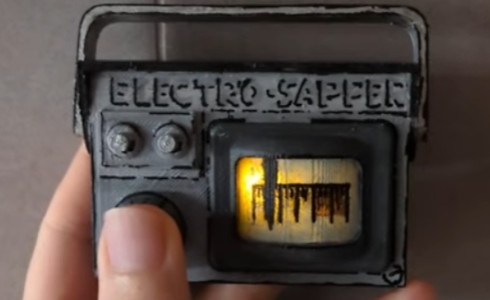
Lore
This sapper belongs to the David Bowie Sensei spy from the video “Orange Crit AK” on the channel Star_, featuring Jerma985, Star_, and David Bowie Sensei. The prop plays randomized lines that reference moments from that video, cheekily implying it was David Bowie who recorded Jerma's and Star's dialogue into this device.
The adventures of these two YouTubers in TF2 helped me through a difficult time in my life, so I wanted to make something special to commemorate that.
Case
The case is custom designed and printed, then hand painted.
Design (Fusion 360)
The case was designed to fit the electronics snugly, and also conform to the look of the spy's sapper as much as possible.
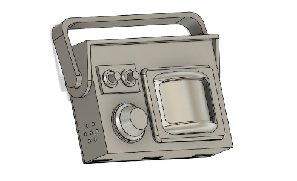
It consists of three parts: the handle, the cap, and the main body. The cap secures with two screws and hinges on the main body. The handle is a loose-fit sleeve over the main body for easy assembly. The main body includes print-in-place button, openings for sound and a thin section for the monitor screen.
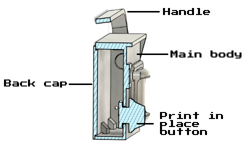
Printing
Printed on a delta printer in durable white PLA. The print-in-place button requires careful support strategy in the slicer to simplify removal. Plan for access to pry tools and avoid fused features.
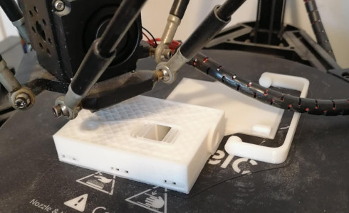
The STL files can be downloaded directly here and are also available on Thingiverse here.
A special thanks goes out to my mother for helping in printing the case!
Painting
Light sanding and primer were applied before painting with acrylic paints and brushes. Multiple thin coats gave better control over edges and reduced pooling around embossed details.
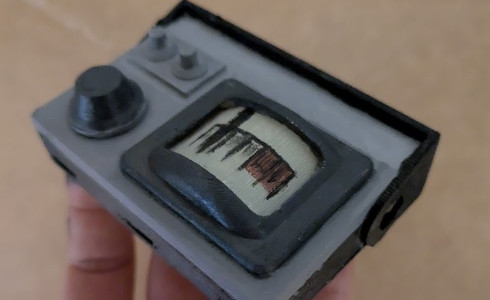
Being a novice in painting, I made some mistakes matching the color hues and tones. I tried to fix them as best as I could. In then end, using a marker to add borders also helped cover up these color mismatches.
The interior was painted black to block LED light from shining through unwanted parts of the case
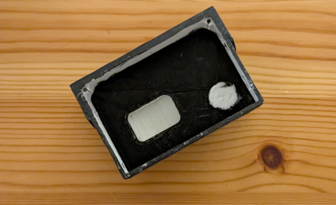
Borderlines
Brush work was inconsistent, so edges were outlined with a marker to crispen panel boundaries and labels.
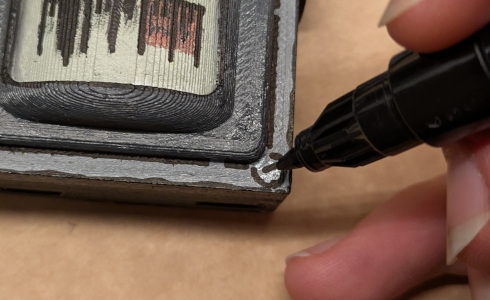
Varnish
The varnish can dissolve marker lines. It had to be applied swiftly in a single stroke per area after the marker had fully cured. Extra strokes cause smudging; patience on cure time prevents damage.
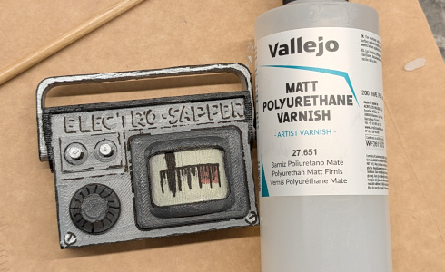
Schematic
The goal was tight packaging, simple controls, and reliable playback.The unit houses a low-power microcontroller, a DFPlayer for audio, and a piezo speaker. Power comes from two AAA cells and also a step-up converter to provide the 5V needed by the DFPlayer.
- A1SHB MOSFET gates system power: it feeds a step-up to 5 V which powers the DFPlayer.
- Audio: passive piezo used as speaker, series 1 kΩ resistors for connecting to SPK pins on DFPlayer
- Sleep: the ATtiny13 sleeps; on button press it enables power via the MOSFET.
- Control: subsequent button presses send serial commands to DFPlayer to play a random sample from the SD card.
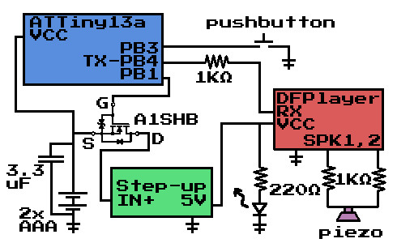
Breadboard
The design was first assembled on a breadboard. The USBasp programmer struggled to communicate with the ATtiny13 when peripherals were attached, so debugging was slower than usual.
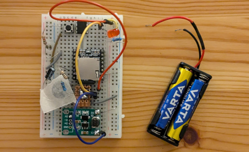
During this phase, I discovered that placing a piece of tape over the piezo speaker significantly improved sound quality when it comes to using it as a speaker. Sound becomes louder and dialogues clearer.
Code
The microcontroller code uses several clever techniques to control the sapper:
- Bit-banged Serial: Since the ATtiny13 lacks a hardware UART, serial communication with the DFPlayer is implemented in software (“bit-banging”). This allows the microcontroller to send commands to play audio tracks.
- Pin Change Interrupt: The device remains in a low-power sleep mode until the button is pressed. A pin change interrupt wakes the microcontroller, powering up the audio circuitry only when needed.
- MOSFET Power Control: The A1SHB MOSFET is used to switch power to the DFPlayer and audio circuitry, ensuring that power is only used when needed.
- Pseudo-Random Sample Selection: When the button is pressed, the code uses a pseudo-random number generator to select which audio sample to play. There’s a 90% chance it will play a David Bowie-related clip, and a 10% chance for other samples, matching the project’s theme.
- Random seeding: The random number generator is seeded using a free running timer value at startup, which helps ensure different sequences of audio clips on each battery change / power up.
These techniques allow the sapper to be responsive, power-efficient, and thematically accurate.
Code is available on GitHub.
Circuit assembly
Wiring is mostly point-to-point between the DFPlayer, step-up, and ATtiny13. A small perfboard secures the button and ATtiny together and also carries the A1SHB and a few capacitors/resistors.
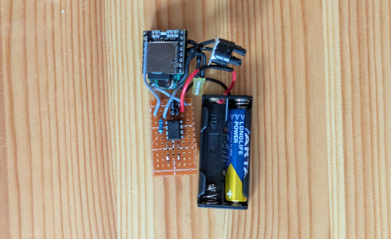
The step up converter and the DFPlayer were sandwiched together with a drop of hot glue because space was limited.
The A1SHB package was challenging to solder on standard perfboard. It was soldered on the bottom side where copper is exposed. Patience and a steady hand were needed to avoid shorts.
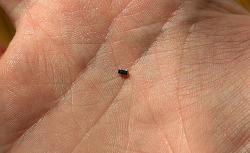
Bottom side shows the MOSFET placement.
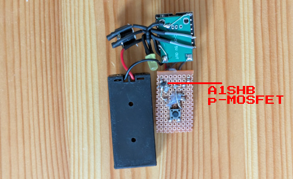
The assembly drops into the case with no screws or glue. A tight fit holds modules in place. A small foam pad behind the perfboard, under the external button location, ensures reliable actuation from the case's button.
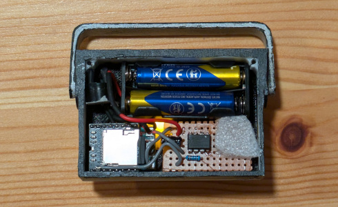
Finished sapper
TADAAA! Final result presented. It works like a charm. Although I noticed that some times pressing the button does not register. I suspect this is due to the variability of the attiny13 clock speed (~+-10%) which affects the timing of the bit-banged serial communication. I might try to fix this in a future revision.